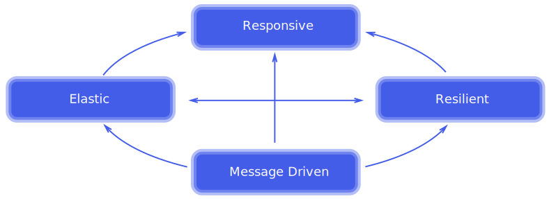

The Reactive Manifesto
www.reactivemanifesto.org/  Responsive:
In Memory Always respond meaningfully in a timely manner
Responsive:
In Memory Always respond meaningfully in a timely manner Elastic: Cluster Stay responsive under varying workload
Elastic: Cluster Stay responsive under varying workload Resilient: RDD Stay responsive in the face of failure
Resilient: RDD Stay responsive in the face of failure Message Driven:Streaming Wrap and stream messages asynchronously
Message Driven:Streaming Wrap and stream messages asynchronously
Responsive
Always respond meaningfully in a timely manner
- "In Memory" improves performance by 1-2 orders of magnitude
- Formulate meaningful response metrics for Data Science
- Leveage statistics to shrink sample populations
- Weigh benefits between real time and near time
- Keep your common sense
- Don't let brute force do your thinking for you
Elastic
Stay responsive under varying workload
- Elasticity is the key value proposition for cloud hosting
- Leveage Spark's integration with Akka Mesos Myraid and YARN
- Always have spare resources available to spin up for peak demand
- Spend the extra money to replicate data
Resilient
Stay responsive in the face of failure
- Clustered servers and network links fail all the time
- Spark Core monitors and responds to cluster failure
- RDDs "Resilient" Distributed Datasets says it all
- RDDs shard the data over a cluster
- RDDs reconstitute shards lost due to node / link failures
- RDDs in Spark can rerun their transforms to recreate lost data
Message Driven
Wrap and stream messages asynchronously
Message Streams facilitate Data Science with these benefits
| Message Feature | Data Science Benefit |
|---|---|
| Asynchronous | The system knows more about concurrency than humans |
| Error Delegation | Errors become first class citizens that are treated properly |
| Location Transparency | Processes are not locked into specific server configuations |
| Publish & Subscribe | Allows roles to be defined from a Data Science perspective |
| Component Isolation | Allows components to focus on their assigned tasks |
| Loose Coupling | Precise instead of accidental interactions |
| Back Pressure | Message streams can be throttled to relieve resources |
| Functional | A programing paradigm well suited for data processing |
References
- Big Data Driving Businesshttp://bit.ly/194auY9
- REST API Tutorialhttp://www.restapitutorial.com/resources.html
- CAP Theoremhttp://en.wikipedia.org/wiki/CAP_theorem
- Hadoophttp://hadoop.apache.org/
- Grid Gainhttp://www.gridgain.com/
- Apache Ignitehttp://ignite.incubator.apache.org/
- Denver In Memory Meetuphttp://bit.ly/1Mb7AQu
- Functional Programminghttp://bit.ly/1vAX8wI
- The Reactive Manifestowww.reactivemanifesto.org/
- Apache Sparkhttps://spark.apache.org/
- RxMarbleshttp://rxmarbles.com/
- PDF at Speaker Deckhttps://speakerdeck.com/axiom6